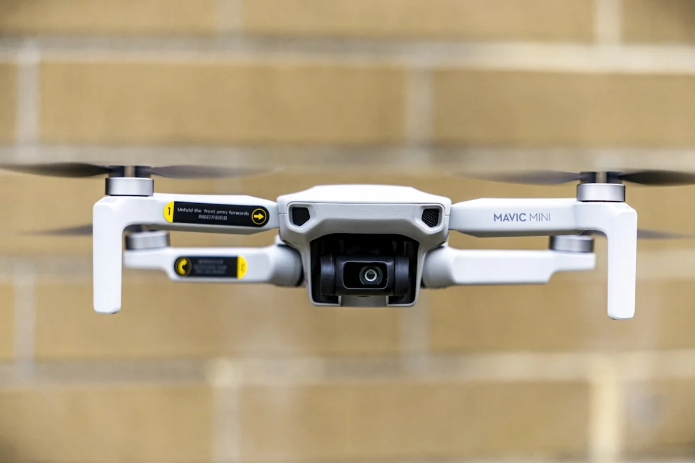

Activación: El dilema energético en Hover
Un multirrotor debe mantener una posición fija (hover) frente a dos escenarios meteorológicos distintos: primero con viento de frente moderado y luego con viento de cola de igual intensidad. Los estudiantes deben predecir en cuál de los dos casos el consumo eléctrico será mayor.
La respuesta no es obvia. En hover estacionario, la nave debe generar sustentación igual a su peso. Con viento de frente, los rotores trabajan en aire "fresco" y relativamente no perturbado, lo que mejora la eficiencia del rotor. Con viento de cola, el dron descansa sobre su propio flujo descendente y el rotor ingesta aire más turbulento, reduciendo la eficiencia y aumentando el consumo para mantener la misma altitud.

Recuerda: "Viento de cola = más consumo en hover". No confundas con aviones de ala fija, donde el viento de cola afecta la velocidad respecto al suelo pero no necesariamente el consumo en vuelo nivelado de la misma manera. En multirrotores, la eficiencia del rotor depende de la calidad del aire que ingiere.